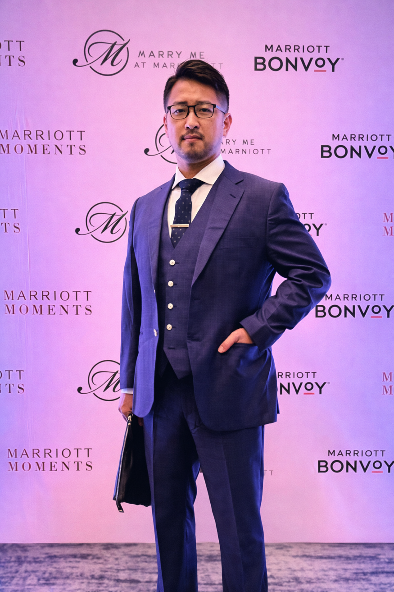

構造設計・業務設計・プロジェクト横断ディレクション
──「人が動けない原因」を整理し、現場を回す実務家
提案資料、スクリプト、FAQ、管理DB、ワークフローを一式で納品。「やり方」ではなく「そのまま使える完成品」を渡す。
ゴールから逆算し、情報・順番・導線を整理。関係者が迷わず動ける骨格を作る。
複数プロジェクトやコミュニティを横断し、情報と人を適切につなぐ。前線が動きやすくなる後方設計を担当。
既存業務のヒアリングから、AI（ChatGPT / Claude等）＋Notion＋Make等を組み合わせた自動化・効率化の設計と実装。